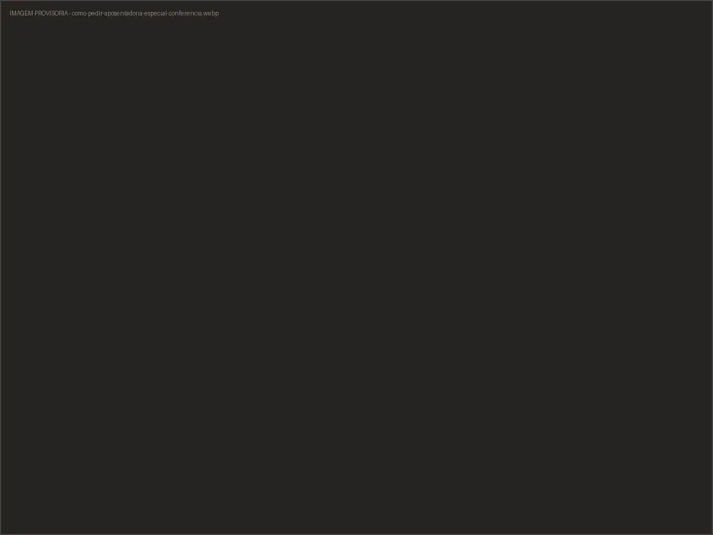

Laudo ou PPP complementar
O INSS pode pedir o LTCAT ou um PPP corrigido quando falta intensidade, técnica de medição ou responsável técnico.
Corrigir o PPP com erroPara saber como pedir aposentadoria especial, guarde isto: o pedido é feito pelo Meu INSS, pela internet ou pelo aplicativo, sem ir a uma agência. O que decide o resultado é a preparação: o Perfil Profissiográfico Previdenciário (PPP) de cada empresa conferido, as datas batendo com o seu histórico no INSS e as exigências respondidas no prazo.
Em resumo
Você precisa de documento de identidade, CPF, PPP de cada empresa em que trabalhou exposto, carteira de trabalho e extrato do CNIS. Laudos técnicos e formulários antigos entram conforme o período.
| Documento | Para que serve | Onde conseguir |
|---|---|---|
| PPP de cada empresa | Prova a exposição ao agente nocivo, a intensidade e o período | Com a empresa; desde 2023, em meio eletrônico para vínculos novos |
| LTCAT (laudo técnico) | Base técnica do PPP; o INSS pode pedir quando o PPP gera dúvida | Com a empresa, que tem a obrigação de mantê-lo |
| Carteira de trabalho | Confirma cargo, datas e empresas, principalmente dos períodos antigos | Física ou digital, no aplicativo da carteira de trabalho |
| Extrato do CNIS | Mostra os vínculos e salários que o INSS já tem registrados | No Meu INSS, em "Extrato de contribuição" |
| Formulários antigos (SB-40, DSS-8030 e outros) | Provam a exposição em períodos anteriores a 2004 | Com a empresa ou no seu arquivo pessoal |
| Identidade, CPF e procuração, se houver | Identificam você e quem pedir em seu nome | Documentos pessoais; modelo de procuração do INSS |
Segundo o INSS, o PPP substituiu os formulários antigos a partir de 01/01/2004, e os vínculos iniciados desde 01/01/2023 devem ter o PPP em meio eletrônico. Veja como funciona o PPP eletrônico. O laudo de base é o LTCAT, o laudo técnico das condições do trabalho, e o histórico de vínculos fica no CNIS.
Se uma empresa não entrega o documento, comece pelo guia de como conseguir o PPP. Para empresa que fechou, veja como conseguir o PPP de empresa que fechou.
[PREENCHER: lista de documentos que o escritório pede ao cliente antes do pedido, se for diferente da tabela]
Confira se cada PPP está completo e se as datas batem com o CNIS. A maior parte das negativas nasce de um documento incompleto que poderia ter sido corrigido antes.
O campo do EPI é um dos que mais travam pedidos: veja o que conferir em EPI eficaz no PPP. Para os demais campos, use o guia do PPP com erro e como pedir a correção.

O pedido leva poucos minutos se os documentos estiverem prontos em PDF. Segundo o INSS, a aposentadoria especial é pedida pelo serviço de aposentadoria por tempo de contribuição, informando os períodos de exposição.
Acesse pelo site ou pelo aplicativo Meu INSS com CPF e senha da conta gov.br.
Antes do pedido, baixe o extrato de contribuição e veja se todos os vínculos aparecem.
Em "Do que você precisa?", digite "aposentadoria por tempo de contribuição" e escolha esse serviço, que o INSS indica também para a aposentadoria especial.
Responda às perguntas sobre atividade especial e indique cada empresa e período em que houve exposição.
Envie PPP, carteira, laudos e formulários em PDF legível, um arquivo por documento, com nome claro.
Anote o número do pedido e a data. Acompanhe em "Consultar pedidos" no próprio Meu INSS.
[PREENCHER: capturas de tela do Meu INSS para cada passo, feitas com conta de teste e sem dados pessoais]
A data em que você conclui o pedido é a DER, a data de entrada do requerimento. Se o benefício for concedido, os pagamentos contam a partir dela. Por isso, adiar o pedido sem motivo pode custar parcelas.
Também é possível pedir pelo telefone 135 ou nomear um procurador. O atendimento é gratuito em todos os canais.
Na página oficial do serviço, o INSS informa prazo estimado de até 45 dias corridos para a resposta. Na prática, o prazo varia com a agência, a fila do momento e as exigências abertas no caminho.
| Etapa | Prazo | Fonte |
|---|---|---|
| Fazer o pedido | Imediato, pela internet | INSS (gov.br) |
| Receber a resposta | Até 45 dias corridos, segundo estimativa do INSS | INSS (gov.br) |
| Responder uma exigência | Em geral 30 dias [CONFIRMAR: prazo de cumprimento de exigência na IN 128/2022] | A conferir na própria exigência |
| Recorrer de uma negativa | 30 dias da ciência da decisão | A conferir na carta de indeferimento |
| Prazo médio observado nos pedidos do escritório | [PREENCHER] | Dados do escritório |
Pedidos de aposentadoria especial costumam demorar mais que a média, porque o INSS precisa analisar cada período e, às vezes, encaminhar o caso para a análise técnica da perícia. Um PPP completo reduz essas idas e vindas.
Exigência é um pedido do INSS por documento ou informação que faltou. Responda dentro do prazo indicado, pelo próprio Meu INSS, anexando exatamente o que foi pedido.
O INSS pode pedir o LTCAT ou um PPP corrigido quando falta intensidade, técnica de medição ou responsável técnico.
Corrigir o PPP com erroPeríodos que não aparecem no CNIS exigem prova extra, como carteira de trabalho, holerites e fichas de registro.
Entender o extrato do CNISSem a empresa para emitir o PPP, entram outros caminhos: síndico da falência, sindicato e laudos de empresa parecida.
Provas sem o PPP da empresaExigência sem resposta costuma levar ao indeferimento. Ainda assim, cabe recurso ou um novo pedido, com nova DER.
Recorrer de um pedido negadoOs erros mais comuns são pedir sem conferir o PPP, deixar de informar períodos especiais e anexar arquivos ilegíveis. Todos podem ser evitados antes do protocolo.
Agente sem intensidade, sem técnica de medição ou sem responsável técnico faz o INSS desconsiderar o período.
Se você não indica um período como especial no pedido, ele pode ser analisado só como tempo comum.
Fotos tortas, páginas faltando ou PDF sem assinatura geram exigência ou negativa por falta de prova.
[PREENCHER: erros que o escritório mais encontra nos pedidos de aposentadoria especial, descritos sem dados pessoais]
Você pode recorrer ao próprio INSS, pelo recurso administrativo, ou entrar com ação na Justiça. O primeiro passo é ler o motivo da negativa na carta de indeferimento.
O recurso administrativo também é pedido pelo Meu INSS e vai para o Conselho de Recursos da Previdência Social. Ele é útil quando o problema é de interpretação. Quando falta prova, muitas vezes compensa corrigir o documento antes de recorrer.
Se o pedido foi negado só pela idade mínima, a ADI 6309 pode mudar o quadro, já que o STF derrubou as idades em 03/06/2026, com embargos ainda pendentes. Veja qual regra vale para você em idade mínima e regra de transição. Para os demais casos, o caminho completo está no guia do recurso contra a aposentadoria especial negada.
Antes de pedir, vale entender também como o valor da aposentadoria especial é calculado e revisar as regras gerais no guia completo da aposentadoria especial.
Não. Segundo o INSS, o atendimento é a distância: o pedido é feito pelo Meu INSS, no site ou no aplicativo. Quem não tem acesso à internet pode ligar para o 135.
Segundo a página do INSS, o pedido segue o serviço de aposentadoria por tempo de contribuição, informando os períodos de atividade especial. Confira o nome exato da opção na tela no momento do pedido.
Pode, mas o período sem PPP tende a ser analisado como tempo comum. Antes de pedir, tente conseguir o documento ou reúna outras provas, como laudos e documentos do sindicato. Veja as opções em como comprovar atividade especial sem PPP.
Nem sempre. O PPP é feito com base no LTCAT e, em regra, basta. O INSS pode pedir o laudo quando o PPP tem lacunas ou gera dúvida, por exemplo sobre a técnica de medição do ruído [CONFIRMAR com o advogado: em que casos o INSS costuma pedir o LTCAT junto com o PPP?].
O INSS estima até 45 dias corridos para a resposta, mas esse prazo varia. Exigências, análise técnica dos períodos e a fila da região podem aumentar bastante o tempo.
Segundo o INSS, quem volta à atividade nociva pode ter a aposentadoria especial cancelada. O tema foi decidido pelo STF; veja os detalhes na página sobre o Tema 709 do STF.
Segundo o INSS, é possível desistir antes do primeiro pagamento ou do saque do FGTS ou do PIS feito por causa da aposentadoria. Depois disso, a desistência não é aceita.
O advogado revisa agentes, intensidades e datas para evitar exigências e negativas evitáveis.
Aposentadoria especial do contribuinte individual: Tema 1291 do STJ, como o autônomo prova a exposição e checklist.…
Ler sobre aposentadoria especial do contribuinte individual e autônomoHistória da aposentadoria especial de 1960 à ADI 6309: o que vale em cada período, leis, decretos e prova exigida.…
Ler sobre linha do tempo da aposentadoria especialAposentadoria especial em 2026: requisitos por período, ADI 6309, 15/20/25 anos, valor e PPP. Calcule seu tempo…
Ler sobre aposentadoria especial: guia completoIdade mínima da aposentadoria especial após a ADI 6309: tabela de qual regra vale para você, pontos 66/76/86 e…
Ler sobre idade mínima e regra de transição![Retrato do advogado Dr. Renato [PREENCHER: sobrenome]](../../assets/img/advogado-retrato.webp)
Dr. Renato [PREENCHER: sobrenome]
OAB/GO [PREENCHER] · Advogado previdenciário com atuação em aposentadoria especial e PPP.